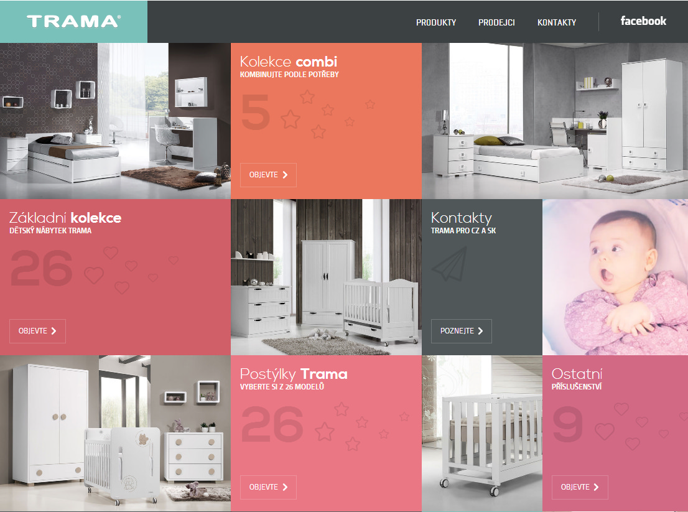
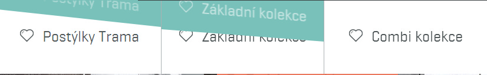
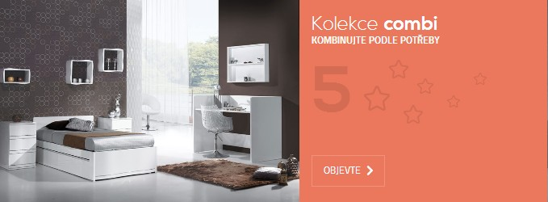
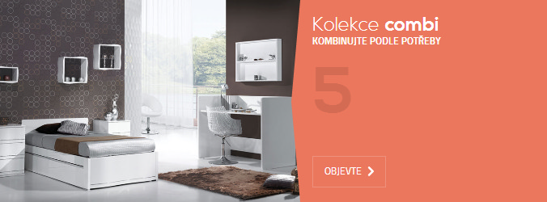
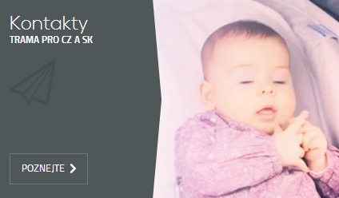
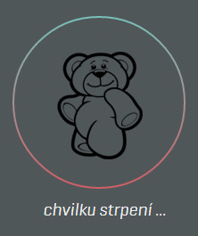
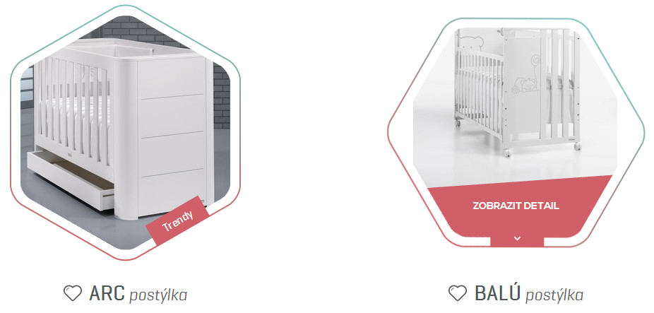
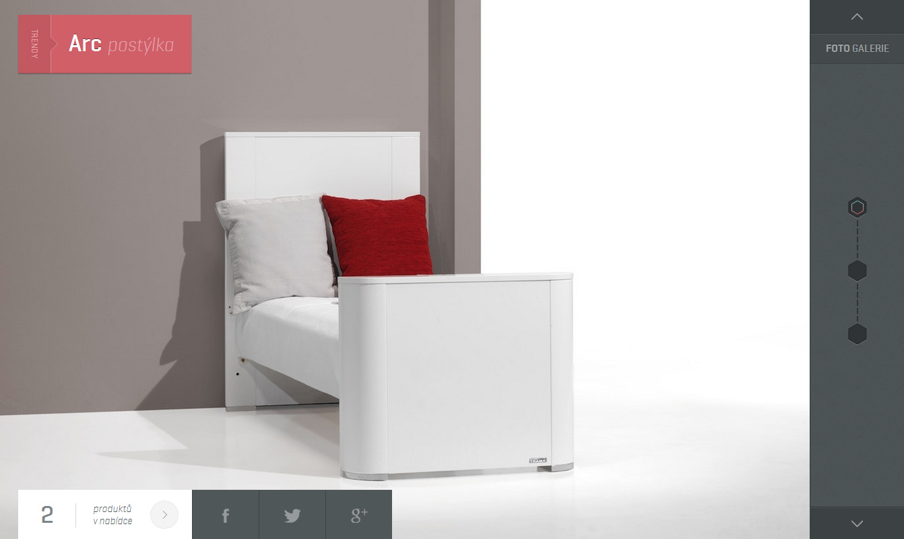
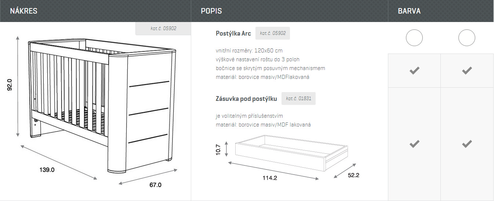

今天不介紹技術，來分享一個網站。
製作公司：http://incube.cz/
必須先承認，我看不懂這是哪國的語言，依網站所提供的訊息應該是屬於家具商品的網站，依我估計是賣嬰兒床的。配色上雖然豐富但很清爽，並不覺得雜亂，而在開啟網頁後，除了許多家具外，還有一個可愛的小baby，讓這網頁更添加了許多生命力。
網站上可以看到許多用CSS3做的互動效果，像是主選單在滑鼠滑入時會有另一層的色彩蓋上。
而在首頁的產品列表上有著許多小裝飾圖樣，像是星星、紙飛機、愛心等等，在滑鼠滑入時那些裝飾圖樣就會飛出區域內，這些小裝飾動畫，更增添了許多喜感。
 這小baby是用jpg連續替換所呈現的小影片。
進入內頁，會出現一隻小熊走路的畫面，而它的外圈色環會一直旋轉，讓Loading的畫面也富含了童趣。
六角形的外框，在滑鼠移入後則會旋轉60度並且顯示產品名稱，而這六角形外框是用png覆蓋在上方。
這產品畫面做的相當有趣，雖然許多效果可能曾經看過，但這網頁將這些效果結合起來，並且表現得相當流暢，很值得參考。
 技術學得再多，最後還是要回歸於實作面，而從這些優秀的網站上，可以了解到很多技術可以透過創意表現得更豐富。